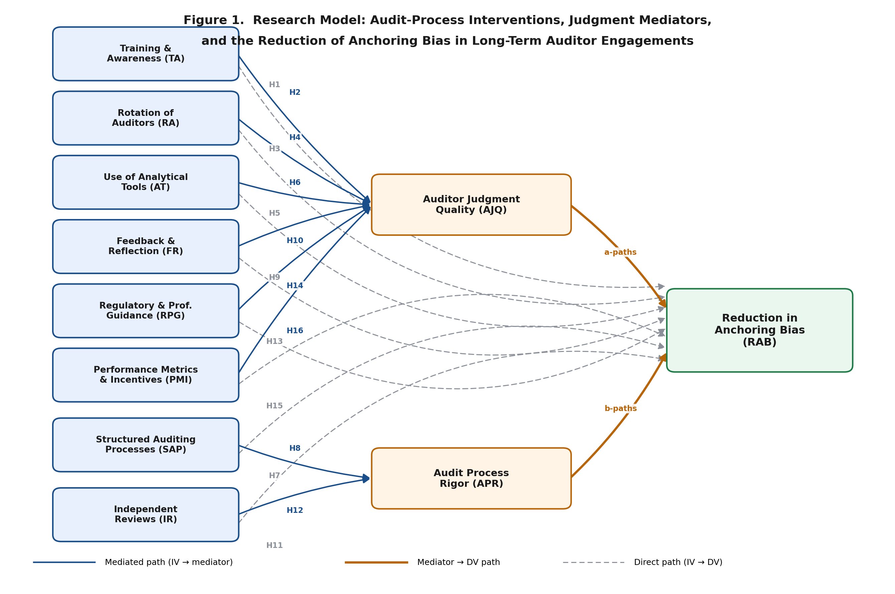

This is the single page Dr. Rey should open. It tracks every artifact in the repo, every blocker between current state and live data collection, and the meeting script for the next conversation.
Each is addressable in today's meeting.
If Dr. Rey opens only one thing, it should be this dashboard. If he opens only one file, it should be Research_Paper_YMalik_v4.docx.
Copy, paste into your mail client, send. Asks for today; offers tomorrow 1:15 PM as fallback.
Subject: Re: v4.1 — can we meet today? READY packet on the repo. Dr. Rey — Thank you, that note means a great deal and the direction is clear. I'd like to ask if we can meet today instead of tomorrow, if any window is open in your calendar. Since your message I have filed the full READY packet for the informed pilot and the recruiting platforms — pilot protocol, feedback form, revision log, CloudResearch launch draft, and MTurk backup launch draft — all on the project branch. The only remaining work before the pilot launches is loading the IRB-reconciled instrument into Qualtrics and getting your face-validity sign-off on the build and on the LinkedIn outreach copy. The plan is to send the pilot link to 6–10 audit-practitioner contacts on LinkedIn this week, and I want your eyes on the build before that goes out. Everything is browsable on this branch: https://github.com/AuditingAI/Profile/tree/claude/scholar-links-review-Plgk6/dba The three things most worth opening: 1. Interactive Dashboard (dba/dashboard.html) — single page with project status, traffic-light readiness, pilot launch sequence, and one-click links to every artifact. Open in any browser. 2. Research_Paper_YMalik_v4.docx — the revised paper (Ch. 2 and Ch. 3 fully expanded per our last call; figure embedded in Ch. 3; instrument in Appendix A). 3. ALL_IN_ONE_DBA_Package_v3.docx — single consolidated document with the paper, the new READY packet, the readiness checklist, weekly update, recruitment copy, and working notes — all in one navigable file. If today doesn't work, I will be on your Zoom at 1:15 PM tomorrow as planned. Thank you again — Yasir Yasir A. Malik PID 1687105 | FIU DBA Cohort 7.16
Have the dashboard, Qualtrics, and the v4 paper open in three browser tabs before the call starts.
dba/dashboard.html and walk the traffic-light view. Sets the frame: 3 blockers, the rest is ready.LinkedIn_Outreach_Pack.docx. Ask for sign-off so the 6–10 pilot invitations can go out this week.Recruiting_Launch_Checklist. Anything else.The READY packet is filed at dba/03_Recruitment_and_Pilot/. Tick each item as it clears. The pilot launches when the first block is green.
| Area | Trigger | Action |
|---|---|---|
| Clarity | Avg clarity < 4/5 or repeated confusion | Revise wording only; preserve construct meaning |
| Construct fit | Avg construct-fit < 4/5 | Review wording; flag advisor if construct meaning may shift |
| Audit-language fit | Wording not natural for auditors | Revise audit phrasing; do not add constructs |
| Response burden | Time > 20 min or repeated fatigue comments | Review redundancy; do not remove items without advisor approval |
| IRB scope | Suggestions for AI items, new populations, sensitive data, or new domains | Do not revise directly. Flag for advisor / IRB review before launch. |
Mirrors Data_Collection_Readiness.md. Expand each stage to see line items.
8 audit-process interventions → 2 mediators (AJQ cognitive, APR procedural) → 1 DV (Reduction in Anchoring Bias). 8 direct hypotheses (dashed) + 8 mediated hypotheses (solid).

| Code | Construct | Role | Anchor citation |
|---|---|---|---|
TA | Training & Awareness | IV (cognitive) | Earley (2001) |
RA | Rotation of Auditors | IV (cognitive) | Arel, Brody, & Pany (2005) |
AT | Use of Analytical Tools | IV (cognitive) | Yoon, Hoogduin, & Zhang (2015) |
SAP | Structured Auditing Processes | IV (procedural) | Dowling & Leech (2007) |
FR | Feedback & Reflection | IV (cognitive) | Bamber & Iyer (2007) |
IR | Independent Reviews | IV (procedural) | DeFond & Francis (2005) |
RPG | Regulatory & Professional Guidance | IV (cognitive) | PCAOB (2015) |
PMI | Performance Metrics & Incentives | IV (cognitive) | Knechel (2013) |
AJQ | Auditor Judgment Quality | Mediator | Bonner (2008) |
APR | Audit Process Rigor | Mediator | Nelson & Tan (2005) |
RAB | Reduction in Anchoring Bias | DV | Tversky & Kahneman (1974) |
Local file links (relative paths) for when you have the repo cloned, plus GitHub permalinks for sharing.
{kind=link}